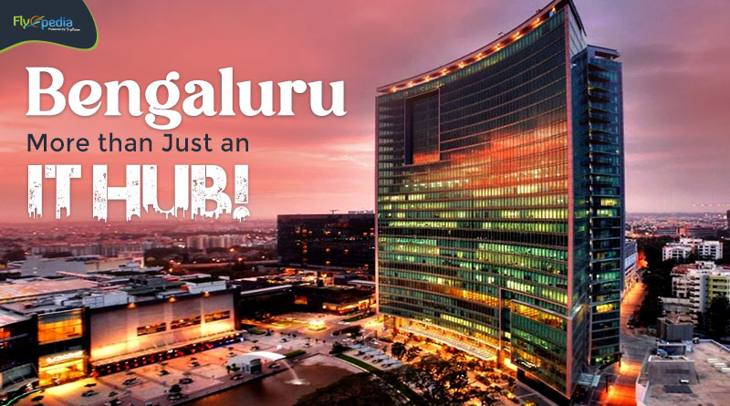
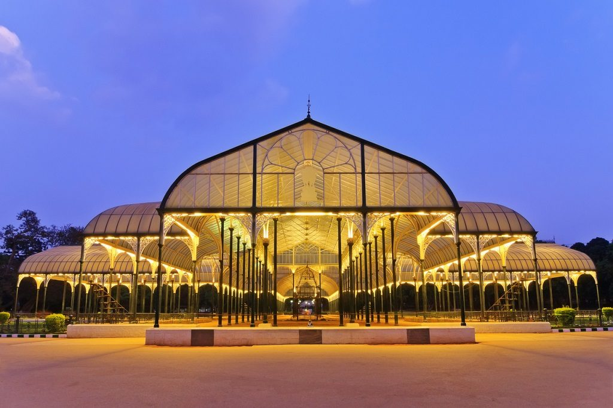
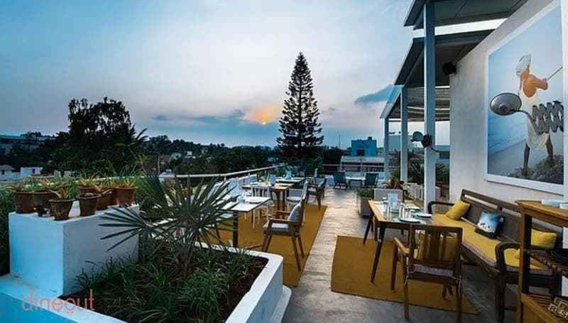

Bangalore is known for its cool and comfortable climate throughout the
year, thanks to its high altitude (920m above sea level). The city
rarely experiences extreme temperatures, making it one of the most
pleasant places to live in India.
Never Too Hot, Never Too Cold – The temperature
stays between 15°C to 30°C year-round, making it one of the most
balanced climates in India.
Refreshing Even in Summer – Unlike most Indian
cities, Bangalore’s summer (March–May) stays around 25°C to 35°C,
with cool breezes in the evening.
Monsoon Brings a Chill – The city receives
moderate rainfall (June–September), cooling the weather and adding a
fresh feel to the air.
Winter is Just Right – With temperatures dropping
to 12°C-20°C (Nov–Feb), winters are cozy, not freezing, perfect for
enjoying a cup of hot coffee!
Sudden Drizzles & Cloudy Skies – Bangalore’s
weather is unpredictable, with surprise drizzles and cloudy
afternoons, making it a favorite among rain lovers
Bangalore’s unique, ever-pleasant climate is a major reason why people
love living and working here!
Fashion & Shopping
Bangalore is not just about tech and innovation, it’s also a
fashion-forward city that blends traditional craftsmanship with modern
global trends. From high-end malls to street markets, Bangalore has
something for every fashion enthusiast.
Commercial Street – One of the most popular
shopping streets, where you can find everything from ethnic wear to
international brands, alongside vibrant street markets with jewelry,
accessories, and handicrafts.
MG Road & Brigade Road – These iconic shopping
destinations offer a mix of high-street brands, boutiques, and
luxury stores, making them perfect for fashion lovers who seek both
style and variety.
UB City Mall– Bangalore’s most luxurious mall,
featuring top international brands like Gucci, Louis Vuitton, and
Zara, and a wide array of high-end boutiques and cafes.
Chickpet & KR Market – If you’re looking for
traditional clothing, especially silks, sarees, and jewelry, these
markets offer a rich cultural shopping experience that’s perfect for
picking up authentic pieces.
Indiranagar’s Boutique Culture – The trendy
Indiranagar area is known for its boutiques and independent
designers, offering stylish, unique, and often custom-made fashion
that’s perfect for fashion-forward individuals.
Whether you’re hunting for designer wear, handcrafted jewelry, or
traditional Indian garments, Bangalore offers a fashion destination
for everyone, combining global trends with local flair.

IT Hub
Bangalore, known as the Silicon Valley of India, is the country's
leading technology and innovation hub. It hosts global tech giants,
top startups, research institutions, and major IT parks that drive
India's digital economy.
Electronic City – One of India's largest IT parks,
home to Infosys, Wipro, Tech Mahindra, and HCL.
Whitefield – A major tech and business district
with companies like IBM, Dell, SAP, and Accenture.
Manyata Tech Park – A massive IT campus housing
IBM, Cognizant, Nvidia, and Microsoft.
Embassy Tech Village – A high-end IT park in
Bellandur, home to Flipkart, Cisco, and JP Morgan.
Bagmane Tech Park – Hosts companies like Oracle,
Boeing, and SAP, making it a key IT hub.
Bangalore continues to lead India’s digital revolution, attracting top
talent and global investments.

Gardens & Parks
Bangalore is often referred to as the Garden City due to its abundance
of lush gardens, parks, and green spaces. These peaceful spots offer a
respite from the bustling city life and are perfect for relaxation,
exercise, or a family outing.
Cubbon Park – One of the largest and most famous
parks in Bangalore, Cubbon Park spans 300 acres and is known for its
beautiful walking trails, lush greenery, and historic statues. It’s
a popular spot for joggers, nature lovers, and families.
Lalbagh Botanical Garden – A historic garden
established in the 18th century, Lalbagh is known for its diverse
plant species, glass house, and the famous Lalbagh Rock. It also
hosts the annual flower show, a key attraction.
Bannerghatta Biological Park– Located just outside
the city, this park combines a zoo, butterfly park, and safari with
a natural forest setting, making it a unique destination for nature
lovers and wildlife enthusiasts.
Nandi Hills– Known for its scenic beauty and a
popular weekend getaway, Nandi Hills offers breathtaking views, cool
weather, and a perfect place to relax amid nature.
JP Park (Jayaprakash Narayan Park) – A
well-maintained park with a musical fountain, large open spaces, and
walking paths, JP Park is ideal for morning walks and family
gatherings.
Bangalore’s gardens and parks provide a peaceful escape and are
perfect for outdoor activities, nature walks, or simply enjoying the
city’s cool climate while being surrounded by greenery.

Food & Cafes
Bangalore is known for its diverse food culture, offering a blend of
traditional South Indian cuisine, modern global flavors, and an
ever-growing café scene. Whether you’re craving local street food or
gourmet dining, Bangalore has something for everyone.
VV Puram Food Street– A food lover's haven, this
bustling street offers a variety of local delicacies like dosas,
vadas, idlis, and chats, making it a must-visit for anyone looking
to experience authentic Bangalore street food.
MTR (Mavalli Tiffin Rooms) – Known for its iconic
South Indian breakfast, MTR has been serving dosas, idlis, and
filter coffee for decades, offering a nostalgic experience of
Bangalore’s culinary heritage.
Koramangala – This area is filled with a wide array
of cafes, bakeries, and restaurants that serve everything from
continental to fusion cuisine. Popular spots include Cafe Felix, The
Hole in the Wall Café, and Shao.
Indiranagar’s Café Culture– Known for its chill,
trendy cafés, Indiranagar has a vibrant café culture, with spots
like Third Wave Coffee Roasters, Cafe Coffee Day Square, and Smoke
House Deli offering a great mix of coffee, desserts, and light
bites.
Bangalore’s International Food Scene – The city is
home to a wide variety of international cuisine, with eateries like
The Fatty Bao, The 13th Floor, and Siam Trading offering delicious
Asian, Italian, and Continental dishes, making it an exciting
destination for global food lovers.
Bangalore’s food scene blends the traditional with the contemporary,
creating a dynamic and exciting culinary landscape that’s perfect for
any food lover!